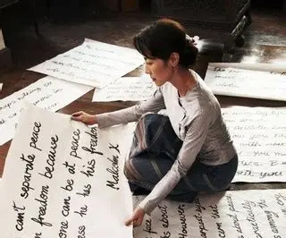
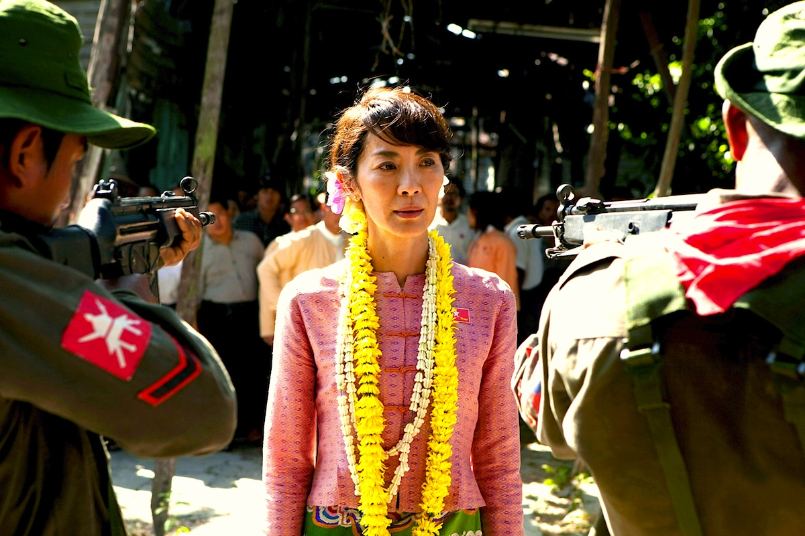
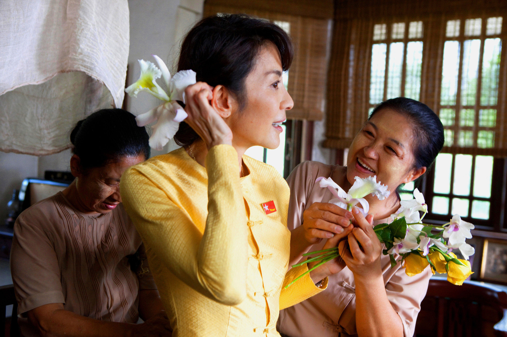
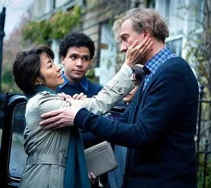
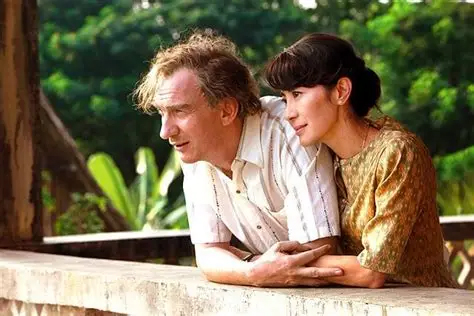
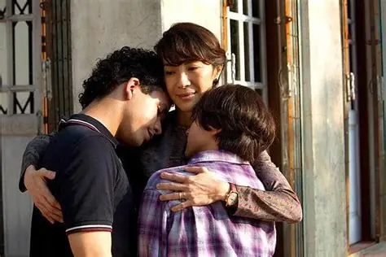

映画紹介
『The Lady』は、ミャンマーの民主化運動を象徴する人物である アウンサンスーチー氏の人生を描いた伝記映画です。
本作品では、自由と平和を求める人々の姿や、 困難な状況の中でも信念を貫く強さが描かれています。
また、家族との愛情や人間としての葛藤も丁寧に表現されており、 世界中の多くの観客に感動を与えました。
作品情報
公開年：2011年
監督：Luc Besson
主演：Michelle Yeoh
ジャンル：伝記・ドラマ
上映時間：132分
『The Lady アウンサンスーチー ひき裂かれた愛』は、 2011年に公開されたイギリス・フランス合作の伝記映画です。 本作品は、ミャンマーの民主化運動を象徴する人物である アウンサンスーチー氏の人生と、その家族との深い愛情を描いています。
監督はフランスを代表する映画監督の Luc Besson（リュック・ベッソン）です。 主演には世界的に有名な俳優 Michelle Yeoh （ミシェル・ヨー）が起用され、 アウンサンスーチー氏を熱演しました。
本作品は単なる政治映画ではなく、 一人の女性が信念を貫きながら自由と民主主義のために 戦い続ける姿を描いた感動的なヒューマンドラマでもあります。
また、美しい映像表現と心に響く音楽によって、 ミャンマーの歴史や文化、そして平和の大切さを 世界中の観客に伝えました。
なぜこの映画を選んだのか
私はミャンマー出身です。
この映画を通して、日本の皆さんに ミャンマーの歴史や文化について知っていただきたいと思いました。
また、自由と平和の大切さについて考える きっかけになれば嬉しいです。
Awards & Recognition
『The Lady』は、ミャンマーの民主化運動を題材とした 国際的な伝記映画として高く評価されました。
主演のミシェル・ヨーは、 アウンサンスーチー役を熱演し、 世界中の観客から高い評価を受けました。
Gallery





